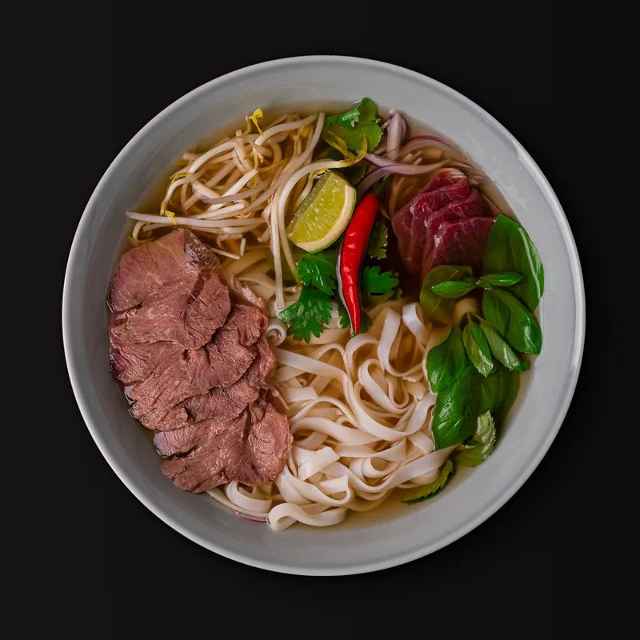

Выберите своё
От пряного фо бо до хрустящих креветок. Всё меню — в одном месте.
ПАНАЗИАТСКАЯ КУХНЯ
Фо бо, огненный вок и немного счастья.
Готовим в Тонком По — к вашему столу.

УДОБНО. ПОНЯТНО. ПО-ВАШЕМУ.
От первого «хочу» до последней ложки — всё под рукой.
От пряного фо бо до хрустящих креветок. Всё меню — в одном месте.
Принят, готовим, передан курьеру, доставлен. Заказ всегда на виду.
История заказов и повтор в пару касаний — в личном кабинете.
 МНОГО ВКУСОВ. ОДИН ТОНКИЙ ПО.
МНОГО ВКУСОВ. ОДИН ТОНКИЙ ПО.МАЛЕНЬКОЕ КАФЕ. БОЛЬШОЕ ПУТЕШЕСТВИЕ.
Вьетнамский фо бо, тайский том ям, лапша из раскалённого вока. Собрали любимые вкусы Азии в нашем кафе в Ильинском-Усово.
Заходите на обед, собирайте друзей или выбирайте что-нибудь вкусное домой.
В гости к ПоУВИДИМСЯ У ПО